05
From 01 · connected frames
Scene Loop
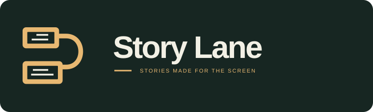
Two widescreen shots joined by a sweeping lane. A simpler, more fluid version of the original Story Cut.
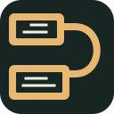
One color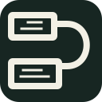
Six refinements of your favorites: the connected screen frames of 01 and the dialogue viewfinder of 04. Shared typography keeps the comparison focused on the symbol.

Two widescreen shots joined by a sweeping lane. A simpler, more fluid version of the original Story Cut.

One color
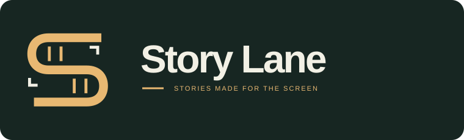
One continuous film-frame stroke forms an S. The cleanest symbol in this set, with a direct link to the Story Lane name.
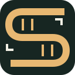
One color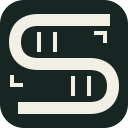
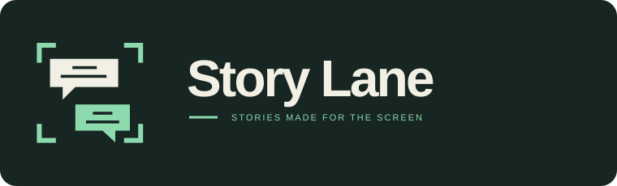
Two opposing dialogue panels become a shot and its reverse angle. A familiar filmmaking idea, expressed through the writing.
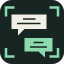
One color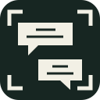
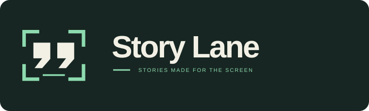
Oversized quotation marks inside a widescreen viewfinder. Bold enough for an app icon, with dialogue at the heart of the mark.
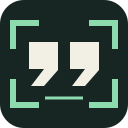
One color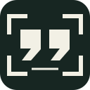
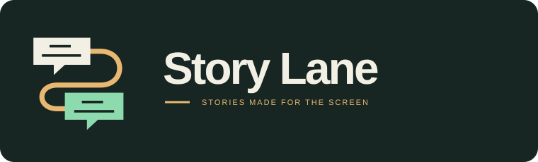
Offset screen-shaped dialogue panels connected by a lane. Scene structure and character exchange become one symbol.
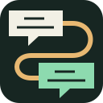
One color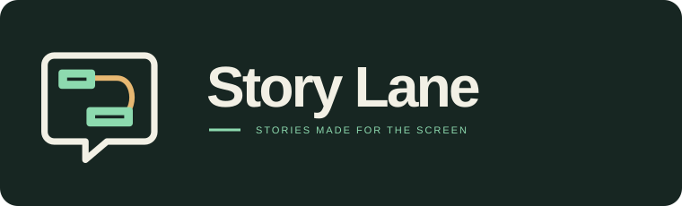
A single screen contains two offset story beats and a connecting S-curve. The lower frame opens into a subtle dialogue tail.